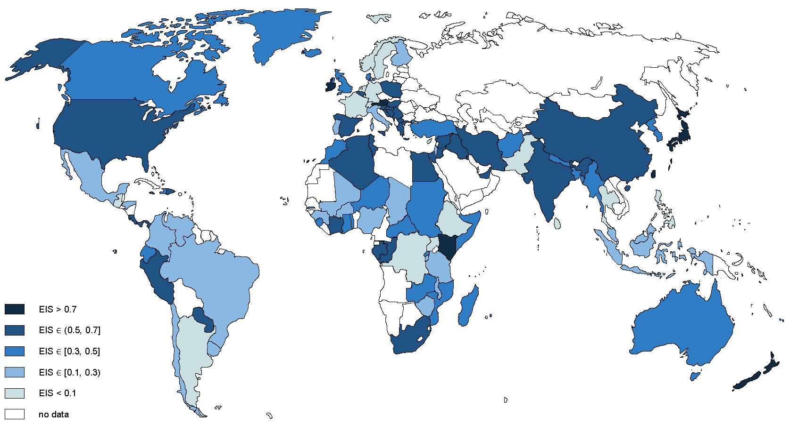

Abstract
We collect 2,735 estimates of the elasticity of intertemporal substitution in consumption from 169 published studies that cover 104 countries during different time periods. The estimates vary substantially from country to country, even after controlling for 30 aspects of study design. Our results suggest that income and asset market participation are the most effective factors in explaining the heterogeneity: households in rich countries and countries with high stock market participation substitute a larger fraction of consumption intertemporally in response to changes in expected asset returns. Micro-level studies that focus on sub-samples of rich households or asset holders also find systematically larger values of the elasticity.
Fig: Estimates of the elasticity of intertemporal substitution in consumption vary.

Reference: Tomas Havranek, Roman Horvath, Zuzana Irsova, and Marek Rusnak (2015), "Cross-Country Heterogeneity in Intertemporal Substitution." Journal of International Economics 96(1), 100-118.